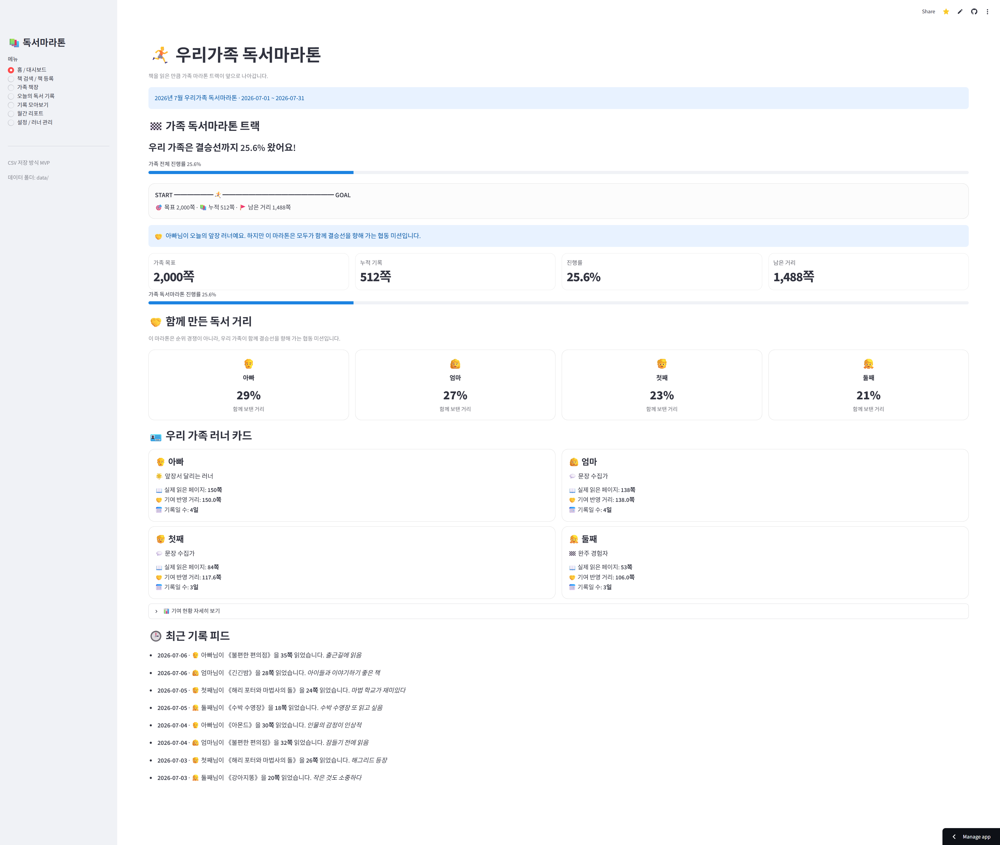
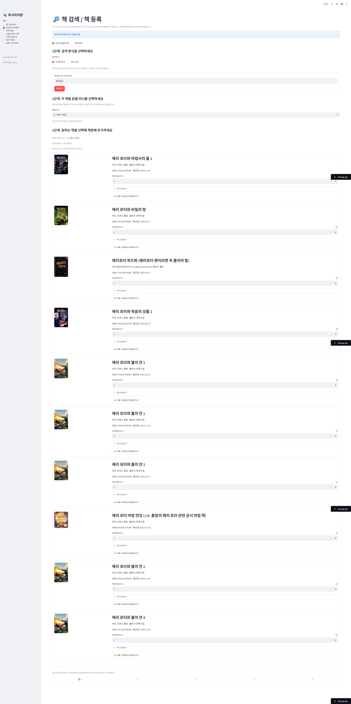
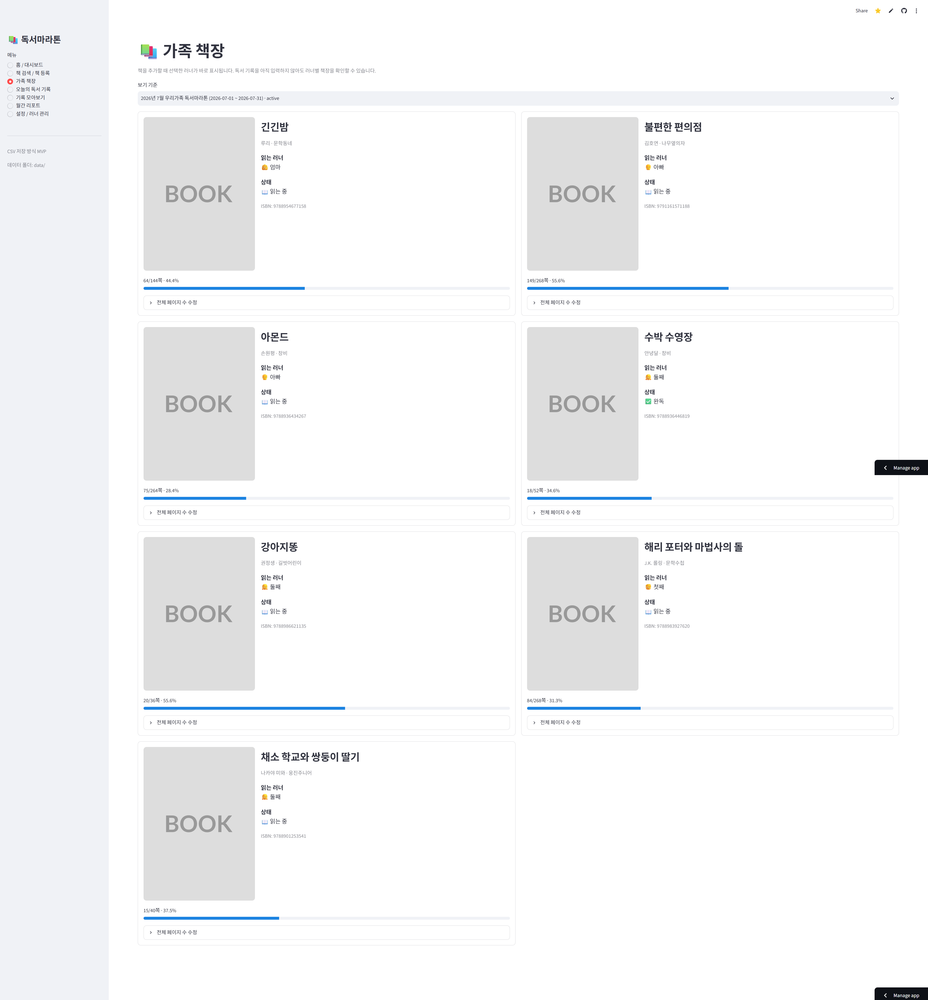
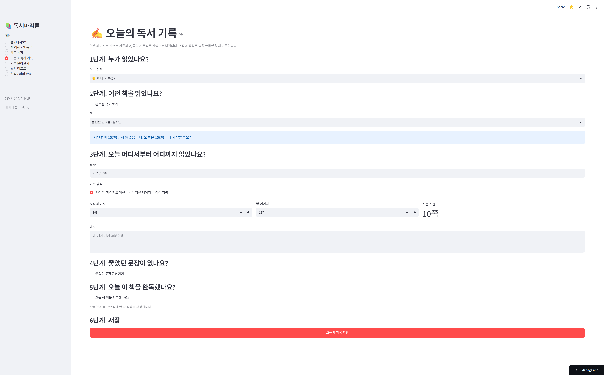
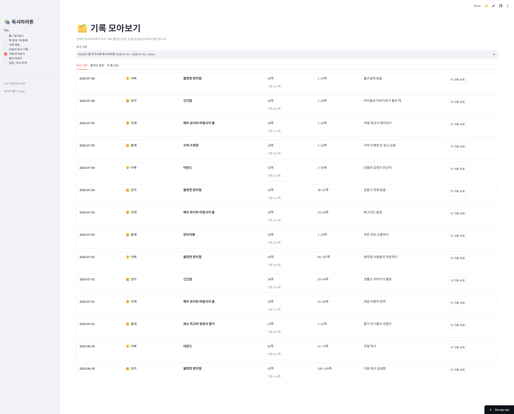
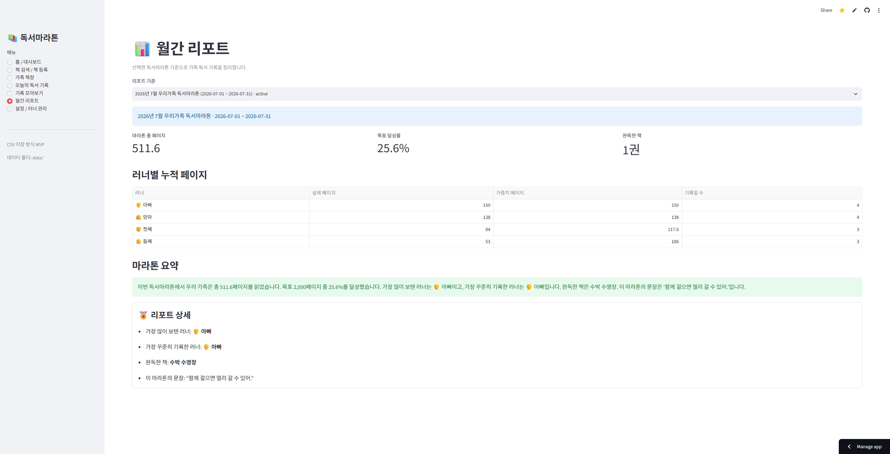
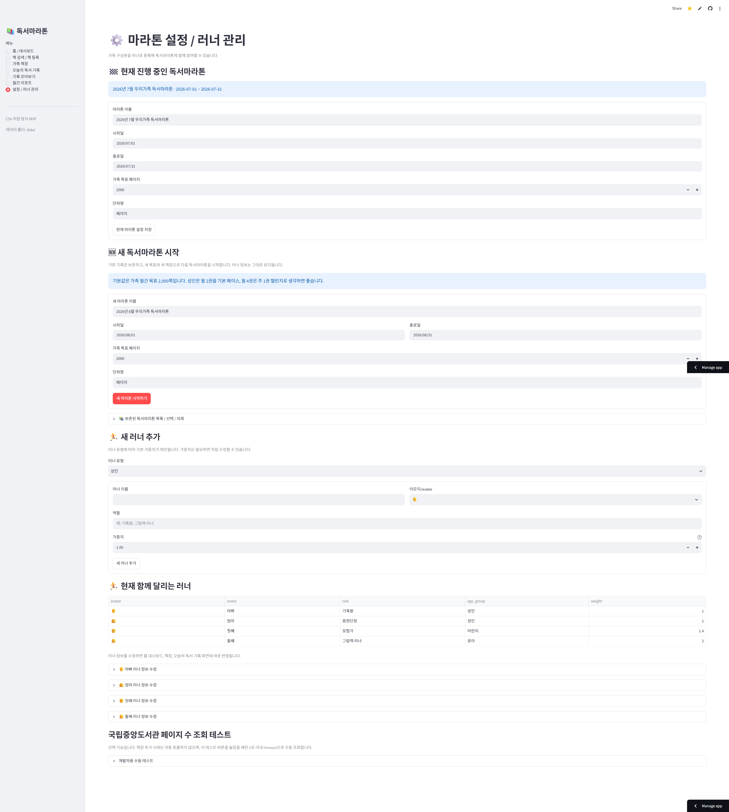

📊
홈 대시보드
가족 전체 목표, 누적 페이지, 남은 거리, 협동 기여도를 마라톤 트랙으로 확인합니다.
가족 구성원이 각자 읽는 책과 페이지 수, 좋았던 문장, 완독 감상을 기록하고 가족 전체의 독서 목표 달성 과정을 마라톤처럼 시각화하는 Streamlit 웹앱입니다.
순위 경쟁이 아니라, 가족이 함께 2,000쪽 목표를 향해 달리는 협동 미션입니다.
책 검색부터 기록, 책장 관리, 월간 리포트, 새 마라톤 시작까지 실제 가족 사용 흐름을 MVP로 구현했습니다.
가족 전체 목표, 누적 페이지, 남은 거리, 협동 기여도를 마라톤 트랙으로 확인합니다.
네이버 책 검색 API로 제목·ISBN 검색을 지원하고, API 실패 시 샘플 검색으로 대체합니다.
러너별 책장, 진행률, 완독 상태를 표시하고 기록 없는 책은 제거·러너 변경이 가능합니다.
시작/끝 페이지로 읽은 쪽수를 자동 계산하고, 좋았던 문장과 완독 감상을 함께 저장합니다.
독서 기록, 좋았던 문장, 완독 감상을 마라톤별로 확인하고 삭제 전 확인 후 정리합니다.
기존 기록은 보존하고, 새 독서마라톤을 시작하거나 과거 마라톤을 다시 선택할 수 있습니다.
앱이 직접 열리지 않아도 아래 흐름만으로 서비스 사용 방식을 이해할 수 있습니다.
가족 목표, 전체 진행률, 마라톤 트랙, 러너별 협동 기여도를 확인합니다.
책 제목 또는 ISBN으로 검색하고, 전체 페이지 수와 읽을 러너를 선택해 책장에 담습니다.
러너와 책을 선택하고 시작/끝 페이지를 입력해 읽은 거리를 저장합니다.
필요할 때만 문장, 생각, 별점, 한 줄 감상을 함께 남깁니다.
선택한 마라톤의 총 페이지, 달성률, 완독한 책, 이달의 문장을 확인합니다.
기존 기록을 보존한 채 다음 달 마라톤을 시작하고 과거 마라톤도 다시 볼 수 있습니다.
README와 동일한 `docs/images/` 경로의 이미지를 사용합니다.







네이버 책 검색 API로 책 제목, 저자, 출판사, ISBN, 표지, 소개, 출간일을 불러옵니다. API 키가 없거나 호출에 실패해도 샘플 데이터 기반으로 검색과 등록이 가능합니다.
국립중앙도서관 ISBN API는 네트워크 환경에 따라 불안정할 수 있어 자동 호출하지 않고, 개발자용 수동 테스트 기능으로 분리했습니다.
CSV에서 SQLite, Google Sheets, Supabase, Firebase 등으로 확장할 수 있습니다.
배지, 협동 미션, 이벤트 기간 보너스, 아이템, 완주 인증서로 독서마라톤 경험을 강화할 수 있습니다.
가족 독서 리포트 자동 생성, 아이 수준별 질문 추천, 문장 기반 대화 주제 추천 등을 검토할 수 있습니다.